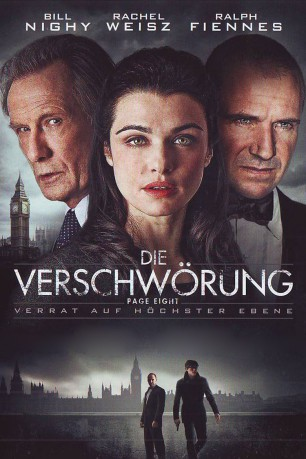

gesehen am 07.05.2016
gesehen am 07.05.2016Alternativ: Page Eight gesehen am 07.05.2016
 
 IMDB-Wertung: 6.9 / 10
IMDB-Wertung: 6.9 / 10  Metascore:
Metascore: 
Johnny Worricker (Bill Nighy) ist ein erfahrener MI5-Agent, der auch sehr gut mit seinem Chef, dem MI5-Direktor Benedict Baron (Michael Gambon), befreundet ist. Baron lebt zusammen mit Johnnys Ex-Frau und seiner Tochter auf seinem Landanwesen. Eines Tages stirbt der MI5-Chef plötzlich an einem Herzinfarkt. Der Tod seines Freundes geschieht kurz, nachdem Johnny eine interessante Meldung erreicht hat. Der englische Premierminister (Ralph Fiennes) hat brisante Informationen vor dem Geheimdienst zurückgehalten und Johnny beginnt zu glauben, dass der Tod seines Freundes etwas damit zu tun haben könnte und will den Vorfall an die Öffentlichkeit bringen. Der Premierminister will die Sache vertuschen und Johnny taucht bei seiner schönen Nachbarin (Rachel Weisz), einer politischen Aktivistin, unter.
Jahr: 2011
Dauer: 99 Minuten
FSK: 0
Land: England Studio: Koch MediaTonspuren:
Untertitel: Deutsch,
Auflösung: 1080p (1920x1080) Größe: 18124 MB
Genre: Thriller, Drama, Mystery
Regisseur: David Hare
Drehbuch: David Hare
Soundtrack: Paul Englishby
Darsteller:
 Bill Nighy als Johnny Worricker
Bill Nighy als Johnny Worricker Rachel Weisz als Nancy Pierpan
Rachel Weisz als Nancy Pierpan Tom Hughes als Ralph Wilson
Tom Hughes als Ralph Wilson Michael Gambon als Benedict Baron
Michael Gambon als Benedict Baron Judy Davis als Jill Tankard
Judy Davis als Jill Tankard Saskia Reeves als Anthea Catcheside
Saskia Reeves als Anthea Catcheside Ewen Bremner als Rollo Maverley
Ewen Bremner als Rollo Maverley Felicity Jones als Julianne Worricker
Felicity Jones als Julianne Worricker Richard Lintern als Max Vallance
Richard Lintern als Max Vallance Ralph Fiennes als Alec Beasley
Ralph Fiennes als Alec Beasley Alice Krige als Emma Baron
Alice Krige als Emma Baron Marthe Keller als Leona Chew
Marthe Keller als Leona Chew Bijan Daneshmand als Cambridge Don
Bijan Daneshmand als Cambridge Don Greg Bennett als Civil Servant , uncredited
Greg Bennett als Civil Servant , uncredited Jay Benedict als Master of the College
Jay Benedict als Master of the College James McArdle als Ted Finch
James McArdle als Ted FinchDatei: X:\3-Trilogie(N-Z)\Verschwörung\Verschwörung 1 - Verrat auf höchster Ebene, Die (2011, FSKo.Al., 1920x1080).mkv seit 05.08.2015
Festplatte: HD Collection-3(N-Z)-6(A-Z)
 Alle Filme aus Gruppe '3-Trilogie(N-Z)\Verschwörung'
Alle Filme aus Gruppe '3-Trilogie(N-Z)\Verschwörung'